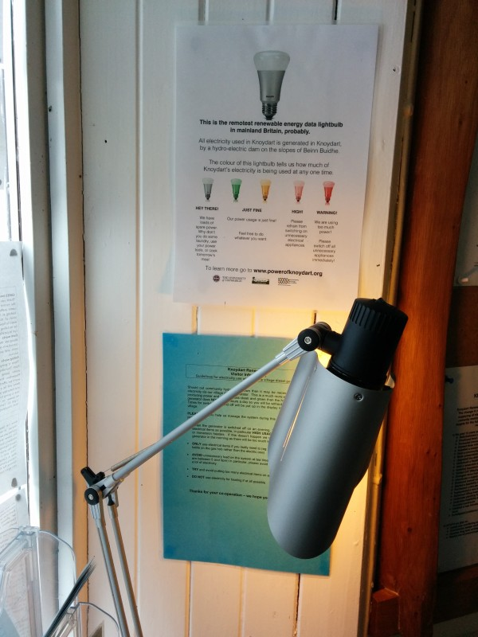

##Interdisciplinary
###Myself
#Practice
##HCI & Art
##Kinect & Dance
Corss talk, collaboration with Professor Simon BiggsCorss talk, collaboration with Professor Simon Biggs
#Thinking Machine
funded by New Media Scotland, collaboration with Robert PowellGame rulesGame rules
##Critical Design
Limewharf, V&A Digital futures, London
##Interdisciplinary
###research
### Energy consumption, Visualisation & Gamification

##Interdisciplinary
###my teaching